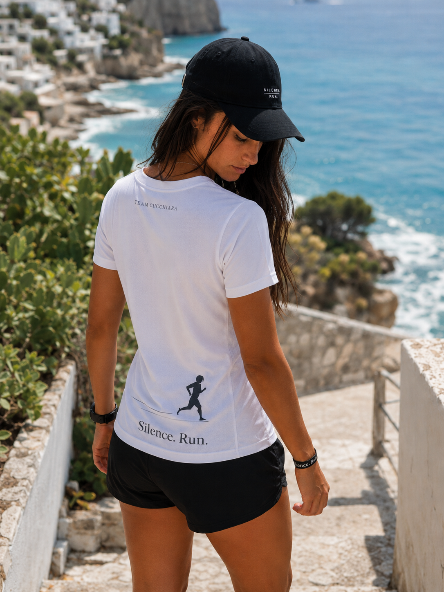
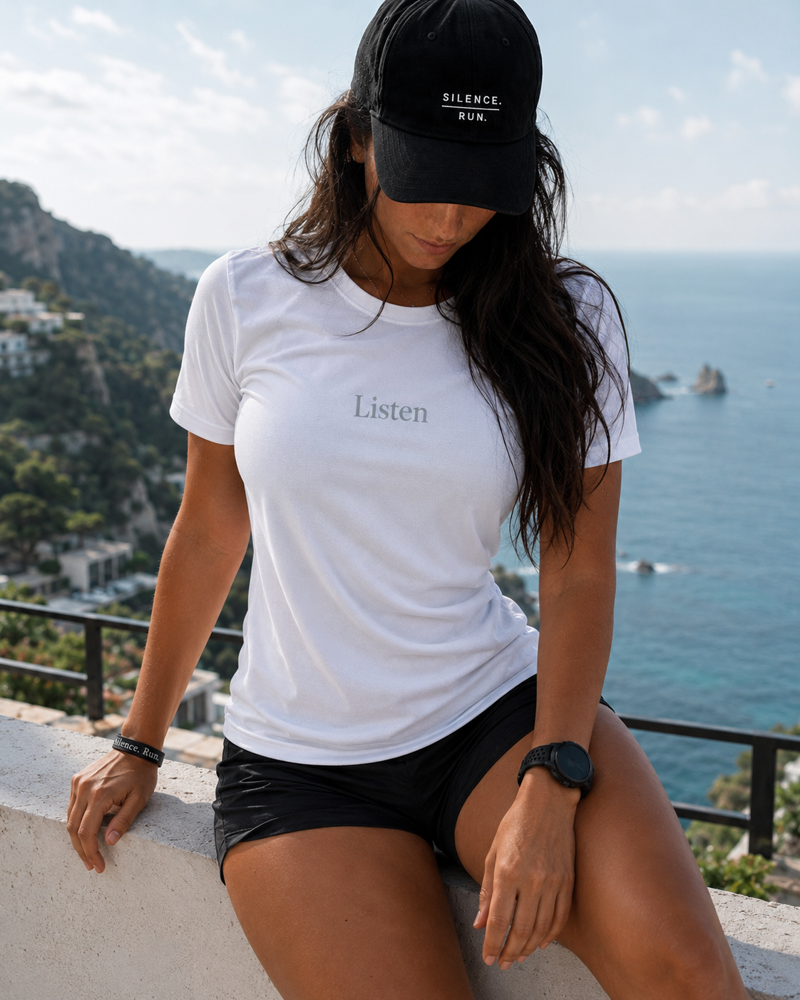
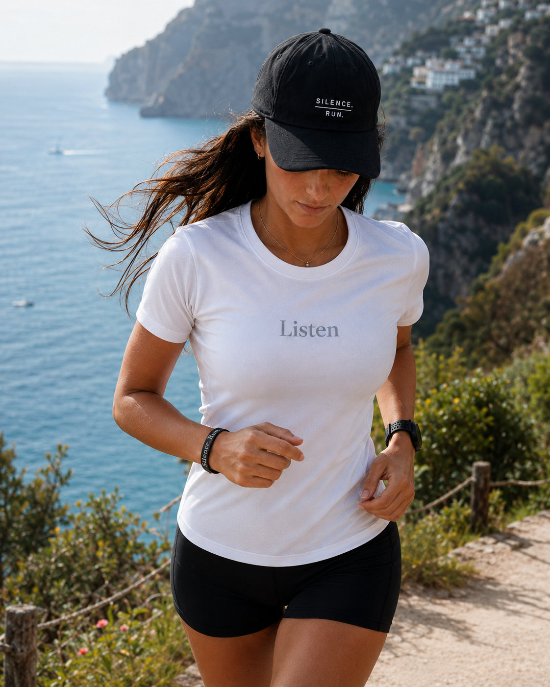
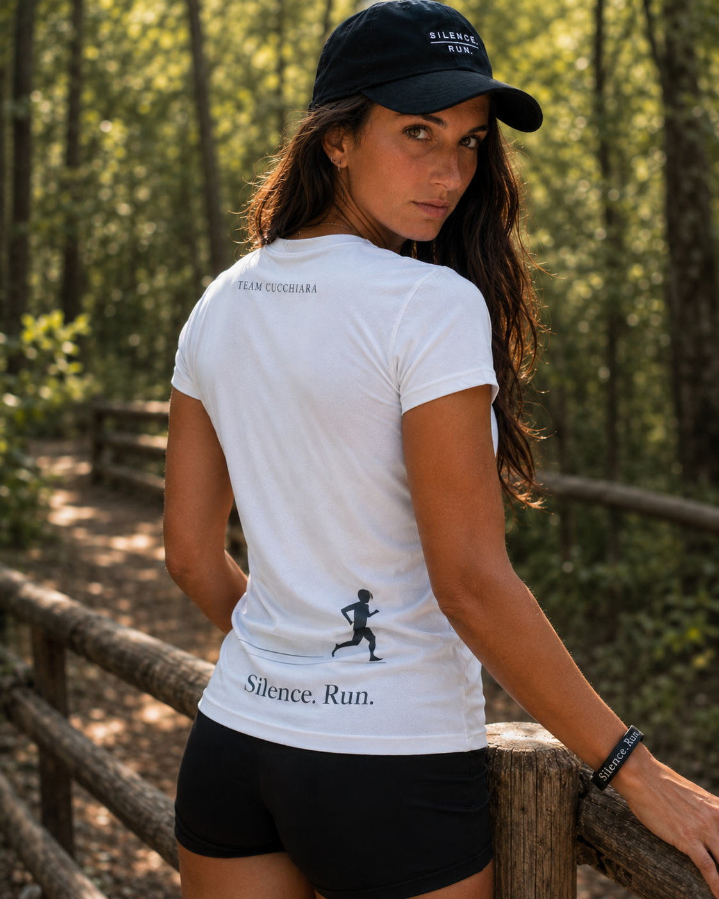

Non è un premio.
È una scelta.

Una maglia da meritare nel tempo

Listen.
Choose.
Become.
Sul fronte, una parola sola: Listen. Un invito ad ascoltare il corpo, il respiro, la fatica, la strada e il momento in cui scegliere di non mollare.
Sul retro, il segno del Team: Team Cucchiara, il runner e la firma Silence. Run.. Una grafica pulita, essenziale e riconoscibile.
La maglia in movimento










Tecnica, essenziale, riconoscibile
Listen
Una parola centrale, pulita e diretta. Il primo gesto di ogni percorso serio: ascoltare prima di scegliere.
Silence. Run.
Il runner, la linea in movimento e la firma del progetto rendono il retro riconoscibile e coerente con l’identità del team.
Tre mesi
La maglia viene consegnata a chi sceglie un percorso continuativo nel Running Coaching Online per almeno tre mesi.
La maglia non si indossa soltanto.
Si rappresenta.
Se vuoi ricevere informazioni sul percorso di Running Coaching Online, sulla maglia ufficiale del Team Cucchiara e sulle modalità per entrare nel team, puoi inviare una richiesta direttamente da qui.